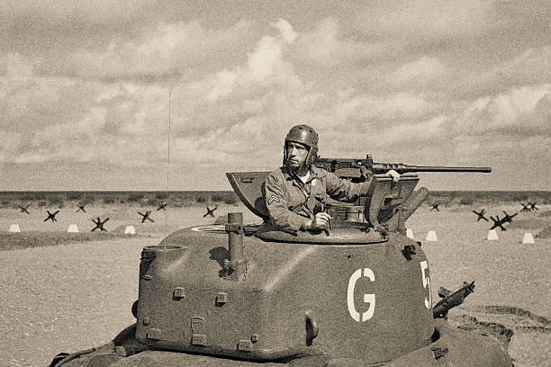
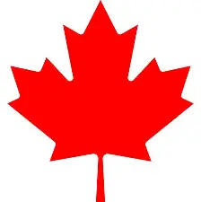

The Canadians played an incredibly prominent role in the Second World War (1939-1945). The Canadians fought in all three mediums: the land, the air, and on sea, as over a million Canadians served in the military at the time. One of the first battles that Canadians fought took place in Hong Kong in 1941. Later, various battles were fought within France, Sicily, and Normandy, during the invasion of Normandy. Canada's air force, which was labelled the Royal Canadian Air Force (RCAF), played a crucial role in protecting ships traversing through the Atlantic Ocean. Over 17,000 Canadians within the RCAF lost their lives. Additionally, over 100,000 Canadians served in the navy, which also played a powerful role in protecting ships headed towards Britain from enemy German submarines. All in all, over 50,000 Canadians were wounded or injured, and over 43,000 Canadians lost their lives following the Second World War.